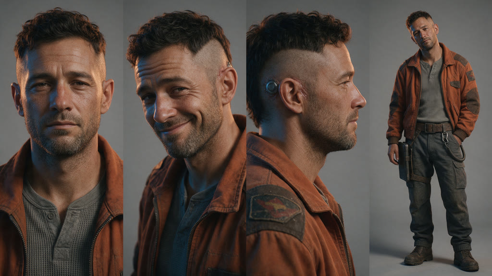
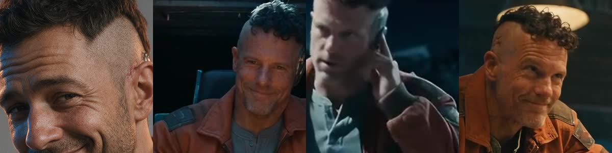
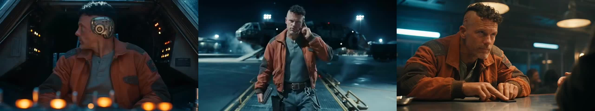

Final video: ../renders/final_web.mp4 (15s, 1080p upscale, graded, ambient synth score, no narration)
| Item | Tool | Cost |
| Reference sheet | seedream_image (Seedream v5, 2K) | $0.135 |
| 2 rejected Seedance attempts (face filter) | seedance_video 2.5 | ~$0 (fal doesn't normally bill rejected requests; this key can't read billing to confirm) |
| One 15s multi-shot clip, 3 hard cuts | seedance_video 2.5, reference-to-video, 480p | ~$3.08 |
| Score | pixabay_music, "leberch" ambient synth (free, no attribution needed) | $0 |
| Total | ~$3.22 of $5 |
Seedance 2.5's partner filter rejected the photoreal face references twice (partner_validation_failed, "likenesses of real people").
So the face came from a detailed text description, and the only reference image was the face-free outfit plate.
All three scenes were made in one 15s generation with hard cuts, so the model carries the same person across shots.

Left to right: reference (three-quarter), cockpit, docking bay, bar.


| Shot | vs reference sheet | vs the other shots | Notes on drift |
| a. Cockpit (0-5.2s) | 4/10 | 8/10 (baseline) | Same type of guy (shaved side, dark curly top, grey stubble, crooked smirk), but a different face from the sheet: older, narrower, lighter eyes. The jack port is a huge chrome disc, not the small port in the brief. Smirk lands well. |
| b. Docking bay (5.2-9.8s) | 3/10 | 5/10 | Biggest drift. Hair is shorter and flatter, the face looks younger and leaner, and the jack port isn't visible. The comm reads as holding a phone to his ear. Steam is lighter than asked for. Outfit and tablet are right. |
| c. Bar (9.8-15s) | 3/10 | 6/10 | Hair and stubble match the cockpit, but the jaw is heavier and the skin redder and more lined, so he reads 5-10 years older. The chip slide and raised eyebrow both land. The contact's hand enters frame-right (fine for the story, breaks the count lock). |
Outfit consistency: 8/10. The jacket, patches, henley, belt, tablet and tether hold across all three shots.
Verdict: It looks cinematic and the brief's actions all land. As a character-consistency test it fails against the reference sheet, because Seedance never saw his face.
Within the one generation he stays recognisably the same guy, but drifts roughly 5-10 years in apparent age.
seedance_ark, needs ARK_API_KEY).